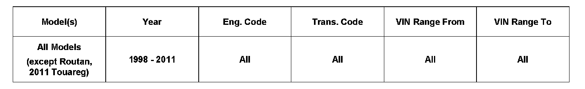
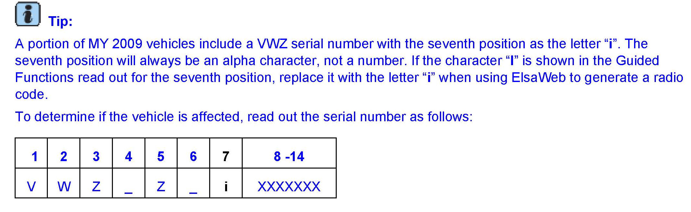
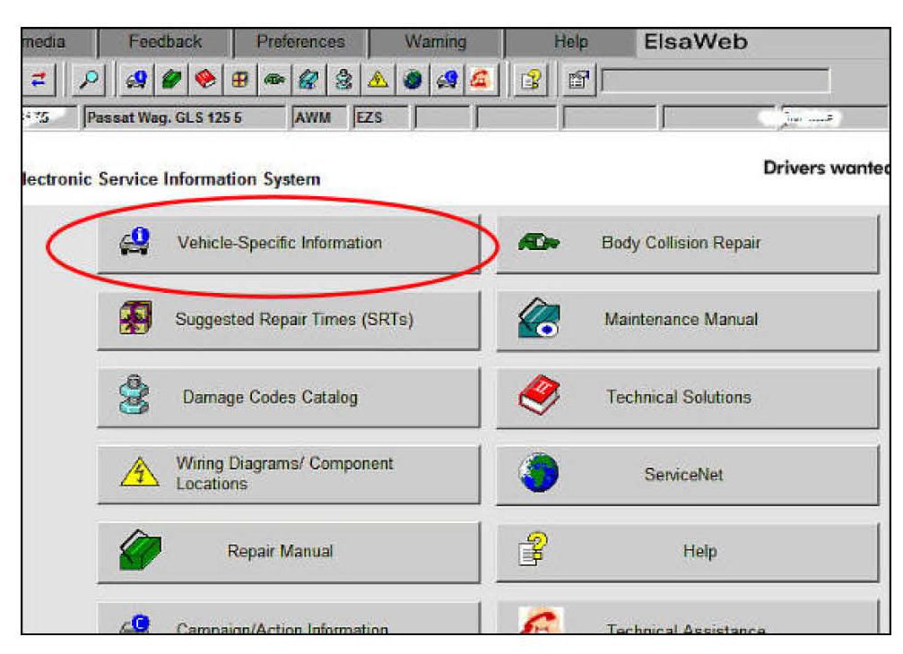
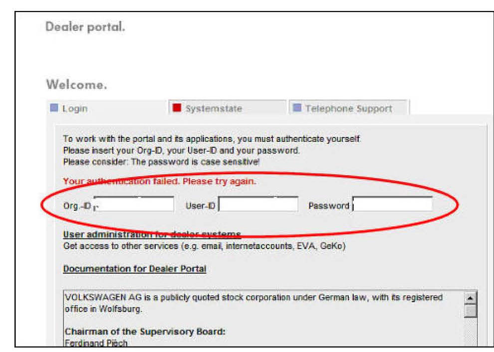
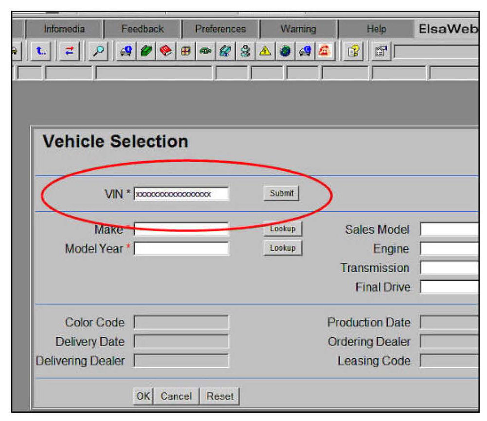
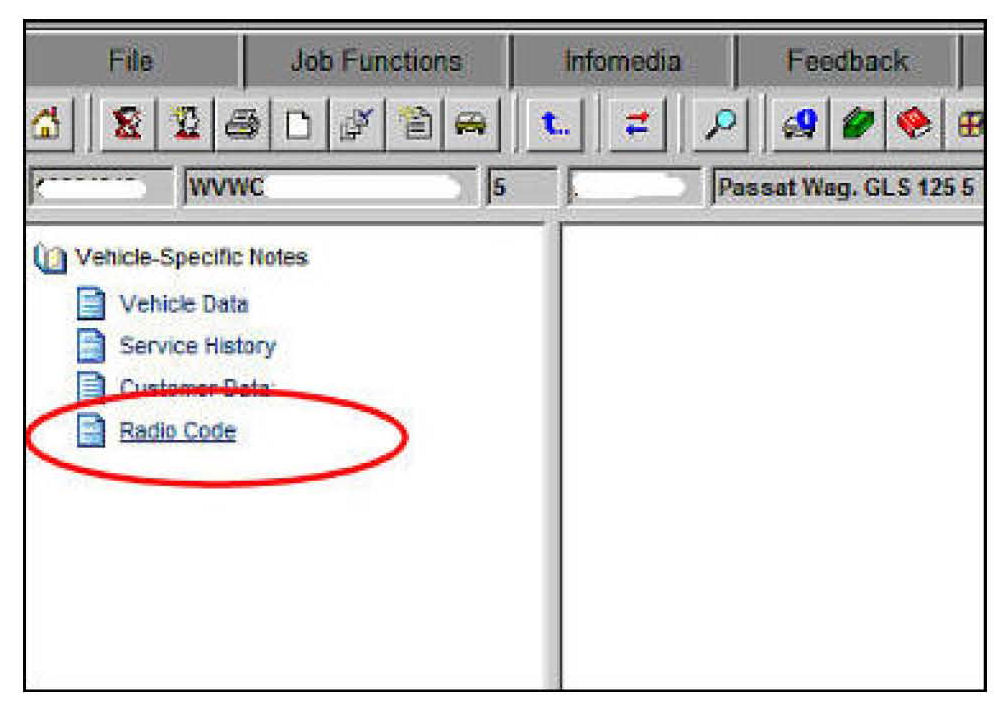
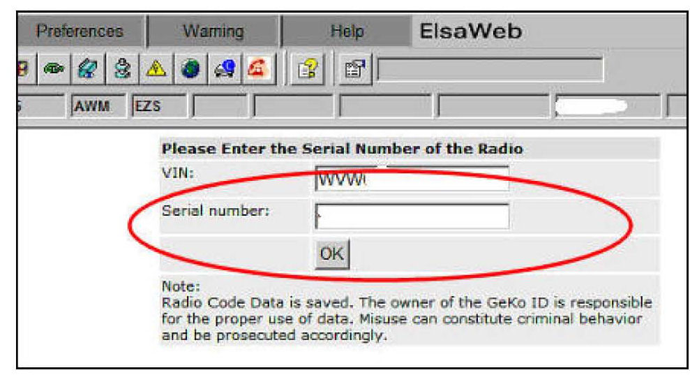
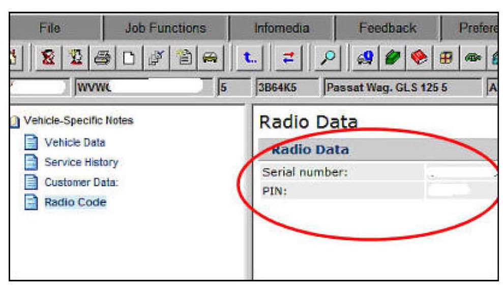
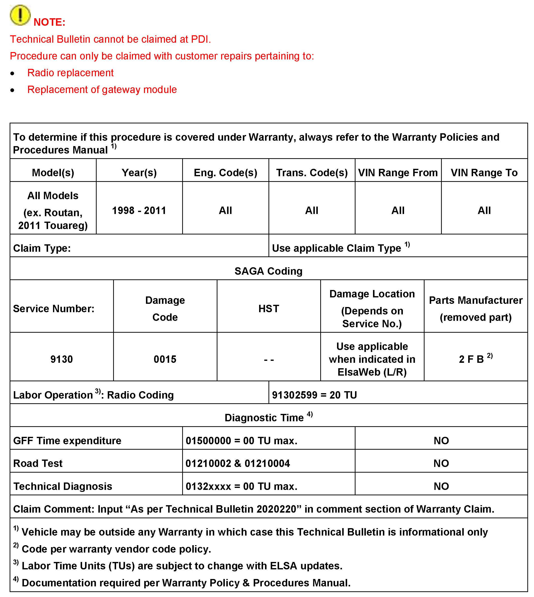
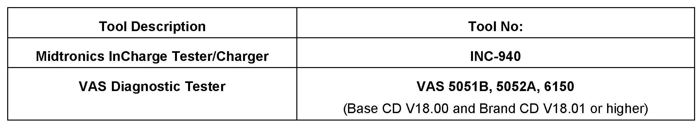

Audio System - Entering/Retrieving Anti-Theft Code
91 10 14July 13, 2010
2020220, Supersedes T.B. Group 91 number 09-22 dated Sep. 10, 2009 to include new MY 2011 radios including RNS-315 & RCD-310.

Vehicle Information
Condition
Radio, Entering and Retrieving Anti-Theft (SAFE) Code
Anti-theft code needs to be entered into the radio to enable functionality.
Procedure includes coding for vehicles without Gateway and manual radio code generation using ElsaWeb.
Technical Background
The radio requires anti-theft code to be entered in the following scenarios:
^ New vehicle delivery
^ New (replacement) radio installed into a vehicle or radio is installed into a different vehicle
^ Radio is electronically locked (SAFE appears in display) after the incorrect code has been entered twice
^ Electrical repair has been performed on the vehicle which required gateway to be replaced
Production Solution
Not applicable.
Service
Tip:
The radio anti-theft code can only be retrieved through the VAS diagnostic tester or through ElsaWeb. An active online connection and valid GeKo ID are required.
Vehicles with Gateway:
Retrieve anti-theft code in the tester by selecting and completing the following test plan:
Non Navigation Radios & MY 2004-2008 Navigation radios
^ G >> 56 Radio >> 56 - Anti-theft - coding inquiry
Navigation Radios (RNS-510 & RNS-315)
^ GF>>37 Navigation >> Radio code inquiry
VVVZ number and VIN number will automatically be read out and anti-theft code will be retrieved from the online servers. Anti-theft code must then be entered into radio as described in Anti-theft Code Entry procedure below.
Vehicles without Gateway OR manual retrieval:
RNS 510 Navigation Radio
In Vehicle Self Diagnosis select the following:
1. 37 - Navigation >>
2. 002 Identification (Service $22) >>
3. 002.03 Identification data (Service $22) >>
4. Master >>
5. Serial number master ($F18C)
The radio serial # can now be recorded.
RNS-315 Navigation Radio
1. 37 - Navigation >>
2. 003 - Identification >>
3. 003.01 Identification Master
4. Serial number >>
The radio serial # can now be recorded
RCD-510 (Premium 8) / RCD-310 Radio
In Vehicle Self Diagnosis select the following:
1. 56-Radio >>
2. 002 Identification (Service $22) >>
3. 002.03 Identification data (Service $22) >>
4. Master >>
5. Serial number master ($F18C)
The radio serial # can now be recorded.
Premium 7, Base single disc radio, Premium 5.5 (NB/NBC), Premium 6 Radio
In Guided Functions select:
^ Vehicle type >> 56 - Radio >> Displaying measuring value blocks
VIN and Radio WWZ serial number (14 digits) from MVB 81 can now be recorded.
Radios MY 2005 & Older
In Guided Functions select:
^ Vehicle type >> 56 - Radio >> Displaying measuring value blocks
VIN and Radio WWZ serial number (14 digits) from MVB 81 can now be recorded.

Generating Radio Codes using ElsaWeb:

^ Select Vehicle-Specific Information

^ Enter Dealer Portal password

^ Enter vehicle VIN number then submit

^ Select Radio Code

^ Enter radio serial number

^Radio P/N number will be generated
Anti-theft Code Entry
Code 1000 is displayed in radio by default. Digits can be changed by pressing corresponding soft keys on radio. Procedures for radio models differ please refer to owner's manual or ElsaWeb for instructions on entering radio pin.
If correct anti-theft code has been entered, display will change to a FM frequency and the radio can be used. If incorrect code is entered, SAFE is briefly seen in the display changing to 1000 again and one additional attempt to enter correct code is possible.
Unlocking a Locked Radio (SAFE is Displayed)
The radio becomes electronically locked after two incorrect code entries. To unlock radio so that correct anti-theft code can be entered, radio must remain powered on for a specified time.
Use the following procedure to do this:
1. Connect Midtronics Tester/Charger INC-940 to vehicle's battery.
2. Switch ignition and radio ON for approximately one hour.
After remaining ON for one hour the radio display will change and the anti-theft code can again be entered. Refer to Anti-theft code entry to complete code entry.

Warranty

Required Parts and Tools
No Special Parts required.
Additional Information
All part and service references provided in this Technical Bulletin are subject to change and/or removal. Always check with your Parts Dept. and Repair Manuals for the latest information.